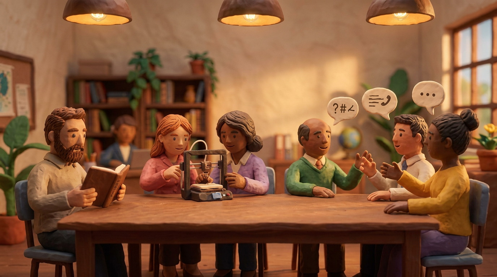
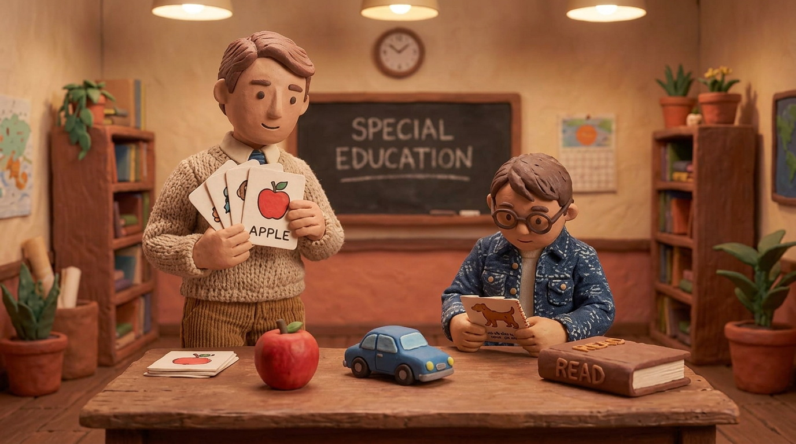
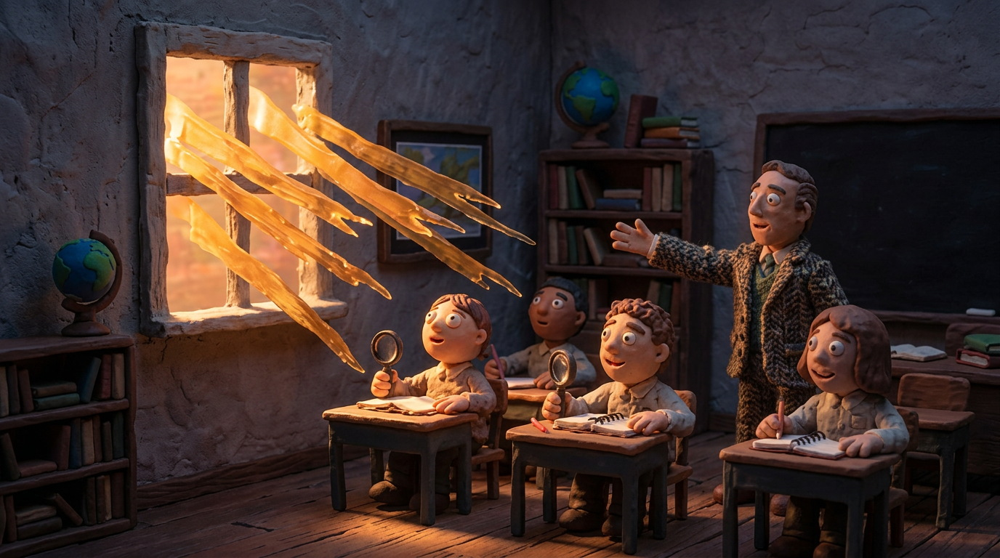
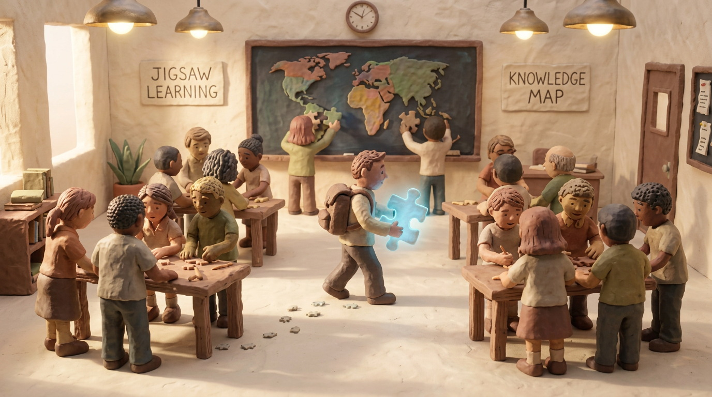
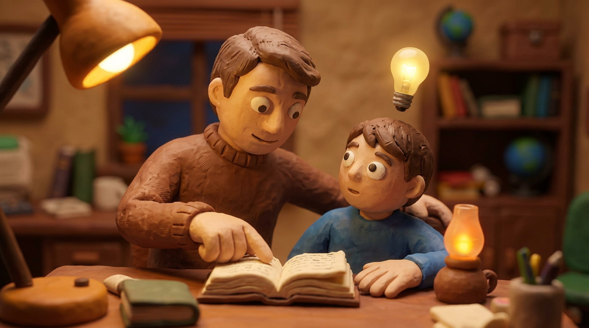
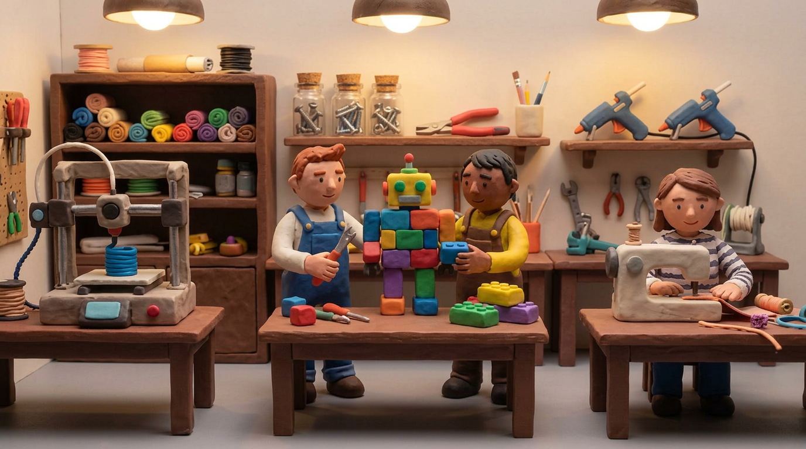

Adattare vuol dire rendere accessibili i materiali didattici agli alunni con BES (Bisogni Educativi Speciali).
È una pratica inclusiva: non serve solo agli alunni con disabilità, ma crea lavoro condiviso per tutta la classe.

Il docente usa 4 strategie: sostituire i materiali (un film al posto di un libro), facilitare strumenti e tempi (con le TIC), semplificare i contenuti, scomporre le materie in nuclei essenziali.
La «partecipazione alla cultura del compito» avvicina gli alunni alla lezione dal punto di vista emotivo.
La visualizzazione trasforma un'idea astratta in qualcosa di visibile: un'immagine, un oggetto o una parola.
L'appaiamento insegna l'associazione tra attività e immagine (oggetto → figura → parola).
Le forme di comunicazione visualizzata sono 3: oggetti, figure e scritte.
La metodologia CLIL usa molto materiale visivo e manipolativo, come organizzatori grafici e immagini.
| CHE COS'È | Adattare i materiali didattici alle esigenze degli alunni con BES, per raggiungere obiettivi personalizzati e vivere il successo formativo. |
| STRATEGIE | Sostituire, facilitare, semplificare e scomporre i contenuti; favorire la partecipazione alla cultura del compito. |
| VISUALIZZAZIONE | Trasformare parole e idee astratte in qualcosa di visibile: oggetti, figure, scritte; l'appaiamento insegna l'associazione tra attività e immagine. |
L'UDL (Universal Design for Learning) è un framework pedagogico nato negli anni '90 al CAST di Boston (Center for Applied Special Technology).
Si ispira all'Universal Design di Ron Mace: gli ambienti vanno progettati accessibili a tutti fin dall'inizio.
Non è lo studente ad adattarsi al curricolo: è il curricolo a diventare flessibile, perché la variabilità umana è la norma.
Rete affettiva (il «perché»): coinvolgimento e motivazione → molteplici mezzi di coinvolgimento.
Rete di riconoscimento (il «che cosa»): percezione delle informazioni → molteplici mezzi di rappresentazione.
Rete strategica (il «come»): pianificazione e azione → molteplici mezzi di azione ed espressione.
In pratica: 9 linee guida e 36 punti di controllo (versione 3.0, 2024) come bussola per ridurre le barriere.
Con la «speciale normalità» di Dario Ianes: ciò che serve a uno studente (es. la sintesi vocale) aiuta tutta la classe.
| CHE COS'È | Framework del CAST di Boston, ispirato all'Universal Design di Ron Mace: curricoli flessibili e accessibili a tutti fin dall'inizio. |
| I TRE PRINCIPI | Molteplici mezzi di coinvolgimento (il «perché»), di rappresentazione (il «che cosa»), di azione ed espressione (il «come»). |
| IN PRATICA | 9 linee guida e 36 punti di controllo (versione 3.0, 2024); dalle barriere all'accessibilità proattiva, con la «speciale normalità». |
Il metodo autobiografico usa il racconto della propria vita (scritto o orale) per capire sé stessi.
Raccontarsi permette di prendere le distanze dalle esperienze e guardarle con più obiettività.
È stato teorizzato da Rogers negli anni '70 come strategia formativa.
Offre un supporto socio-emotivo: il docente accoglie e incoraggia, senza sostituirsi all'alunno.
Il racconto diventa uno specchio per esplorare stati emotivi, relazionali e cognitivi.
Strumenti utili: scrittura espressiva, ricordi personali e familiari, drammatizzazione, oggetti simbolici.
Sostiene l'autodeterminazione e il feedback sulle scelte compiute.
| CHE COS'È | Raccontare la propria vita, in forma scritta o orale, per comprendere sé stessi; teorizzato da Rogers negli anni '70. |
| COME FUNZIONA | Il docente accoglie e incoraggia senza sostituirsi all'alunno; il racconto diventa uno specchio per esplorare stati emotivi, relazionali e cognitivi. |
| A COSA SERVE | Offre un supporto socio-emotivo, favorisce la presa di coscienza, l'autodeterminazione e l'inclusione. |
L'apprendimento basato sui fenomeni (in inglese Phenomenon-based learning) parte dall'osservazione di eventi reali.

L'insegnante presenta un fenomeno osservabile con video, immagini, esperimenti, presentazioni o quiz.
Le domande spontanee degli alunni diventano il punto di partenza dell'esplorazione.
Dalle domande si passa a ricerche guidate, raccolta e analisi di dati, discussioni e problem-solving condiviso.
Gli studenti diventano protagonisti attivi e collegano le nuove conoscenze a quelle già possedute.
Il fenomeno deve essere osservabile da tutti, documentabile e abbastanza interessante da motivare la classe.
Un esempio pratico: lo studio della luce in un'aula buia, introducendo la luce a intervalli regolari.
| CHE COS'È | Metodologia che parte dall'osservazione di un fenomeno reale per coinvolgere attivamente gli alunni nell'apprendimento. |
| COME FUNZIONA | Video, immagini, esperimenti o quiz suscitano domande spontanee; poi ricerca guidata, dati, discussioni e problem-solving condiviso. |
| A COSA SERVE | Sviluppa collaborazione, creatività, autonomia e collegamenti tra le discipline (esempio: la luce e i sistemi ottici). |
Il Task-Based Learning (TBL) è una metodologia per imparare le lingue con compiti significativi e autentici.
Gli alunni usano la lingua come strumento per raggiungere un obiettivo in situazioni simili a quelle reali.
1. Pre-task (preparazione): il docente introduce l'argomento, la grammatica e il vocabolario essenziale.
2. Task cycle (compito): gli studenti lavorano in piccoli gruppi o a coppie; il docente è un facilitatore.
3. Language focus (riflessione): la classe analizza la lingua usata e pratica le nuove strutture.
I vantaggi: più autonomia, più motivazione, ambiente collaborativo e competenze utili fuori dall'aula.
| CHE COS'È | Metodologia glottodidattica: si apprende la lingua svolgendo compiti significativi e autentici che simulano situazioni reali. |
| LE TRE FASI | 1. Pre-task (preparazione) · 2. Task cycle (il compito in gruppo o a coppie) · 3. Language focus (riflessione sulla lingua usata). |
| VANTAGGI | Autonomia e responsabilità, motivazione, ambiente collaborativo, competenze generalizzabili alle situazioni reali. |
Il cooperative learning è un apprendimento basato sul lavoro di gruppo per raggiungere obiettivi comuni.
Si fonda sull'interdipendenza positiva: il successo di ciascuno è legato a quello del gruppo.

Sviluppa competenze cognitive e abilità sociali: ascolto, fiducia reciproca e sostegno.
Valorizza le differenze individuali come risorse (didattica inclusiva).
La classe si divide in gruppi casa: ogni studente diventa esperto di una parte dell'argomento.
Gli esperti si riuniscono nei gruppi di esperti per approfondire il tema insieme.
Poi tornano nei gruppi casa e condividono le conoscenze per realizzare un compito finale comune.
È molto efficace nel CLIL: unisce l'apprendimento delle materie a quello della lingua straniera.
| CHE COS'È | Apprendimento in gruppo per obiettivi comuni, fondato sull'interdipendenza positiva e sulla responsabilità individuale. |
| LA TECNICA JIGSAW | Gruppi casa → gruppi di esperti (approfondimento) → ritorno nel gruppo casa per condividere → compito finale comune. |
| A COSA SERVE | Sviluppa competenze cognitive e abilità sociali (ascolto, fiducia, sostegno); valorizza le differenze ed è efficace nel CLIL. |
Nel Peer Tutoring uno studente (tutor) aiuta un compagno (tutee) dentro un sistema strutturato e supervisionato dal docente.
La formalizzazione scientifica si deve a Keith Topping, dagli anni '80 del Novecento.

Le coppie si scelgono con criteri: la sociometria (sociogramma di Moreno) individua leader positivi e studenti isolati.
Il tutor impara a fare domande strategiche e a offrire scaffold (impalcature di supporto), non solo risposte.
Same-age tutoring: tutor e tutee hanno la stessa età e possono alternarsi nei ruoli.
Cross-age tutoring: studenti più grandi aiutano alunni più giovani (responsabilità e appartenenza).
Class-Wide Peer Tutoring (CWPT): tutta la classe lavora in sessioni di tutoring simultaneo.
I benefici: il tutor consolida le conoscenze, il tutee riceve aiuto personalizzato; crescono empatia e «rumore produttivo».
| CHE COS'È | Tutoraggio strutturato tra pari (tutor e tutee), supervisionato dal docente; sistematizzato da Topping. |
| LE FORME | Same-age tutoring · cross-age tutoring · Class-Wide Peer Tutoring (CWPT). |
| A COSA SERVE | Consolida le conoscenze del tutor, personalizza l'aiuto al tutee, sviluppa empatia, «rumore produttivo» e inclusione. |
Il metodo Harkness (dagli anni '30, dal filantropo Edward Harkness) si svolge attorno a un tavolo ovale.
Il docente è un facilitatore: non impartisce nozioni, ma guida il dialogo tra gli studenti.
Gli alunni esplorano materiali da fonti diverse e li presentano al gruppo.
Si stimola il pensiero critico: ascoltare, fare domande aperte, collegare idee, rispettare i turni di parola.
Variante a due gruppi: uno discute e l'altro prende appunti, poi i ruoli si invertono.
Alla fine si riflette su ciò che si è compreso e sulle domande rimaste aperte.
Strumenti utili: registrazioni audio, copie digitali e frasi guida per far partecipare tutti.
| CHE COS'È | Discussione guidata attorno a un tavolo ovale (Edward Harkness, anni '30): gli studenti protagonisti, il docente facilitatore. |
| COME FUNZIONA | Si esplorano testi e materiali, si pongono domande aperte, si ascolta, si collegano idee e si rispettano i turni di parola. |
| A COSA SERVE | Stimola il pensiero critico e la partecipazione attiva di tutti; simile al circle time, ma centrato sui testi. |
La flipped classroom (classe capovolta) nasce dalla sperimentazione di Bergmann e Sams negli anni 2000.
Non è «far lezione al posto dell'insegnante»: capovolge i luoghi e i tempi dell'insegnamento.
Le lezioni si seguono a casa con video del docente; a scuola si fanno studio, compiti e attività pratiche.
A casa gli studenti guardano i video didattici e svolgono brevi esercizi di verifica.
In classe si chiariscono i dubbi e si fa didattica attiva: cooperative learning, laboratori, lavoro individualizzato.
Il docente diventa un facilitatore e può seguire ogni studente con ritmi personalizzati.
Favorisce l'inclusione: gli studenti con BES accedono ai contenuti con tempi adattabili.
| CHE COS'È | Metodologia di Bergmann e Sams (anni 2000) che capovolge luoghi e tempi della lezione: non è «far lezione agli studenti». |
| COME FUNZIONA | A casa si guardano i video didattici del docente; in classe si svolgono attività pratiche, cooperative e di laboratorio. |
| A COSA SERVE | Libera tempo per una didattica attiva e personalizzata; rispetta i ritmi di ciascuno e favorisce l'inclusione degli studenti con BES. |
I makerspace sono spazi educativi dove si impara facendo e creando (biblioteche scolastiche o strutture private).
Hanno strumenti tecnologici (stampanti 3D, robot, macchine da cucire digitali) e semplici (cartone, pennarelli, mattoncini).

Educano a una mentalità creativa e di progettazione: dall'idea al progetto concreto.
Si ispirano al learning by doing (imparare facendo).
1. si definisce il problema · 2. si fa ricerca · 3. si stabiliscono i requisiti · 4. si trovano idee · 5. si costruisce un prototipo.
6. lo si testa · 7. lo si valuta · 8. lo si modifica se serve · 9. si presenta il lavoro · 10. si riflette sul processo.
Il percorso raramente è lineare: servono più tentativi per arrivare al risultato migliore.
Sviluppa competenze STEM (scienza, tecnologia, ingegneria, matematica), autostima e problem-solving.
| CHE COS'È | Spazi educativi in cui si impara facendo e creando: strumenti tecnologici (stampanti 3D, robot) e semplici (cartone, mattoncini). |
| IL PROCESSO | 1. problema · 2. ricerca · 3. requisiti · 4. idee · 5. prototipo · 6. test · 7. valutazione · 8. modifica · 9. presentazione · 10. riflessione. |
| A COSA SERVE | Sviluppa mentalità progettuale e creativa, problem-solving e competenze STEM; è l'evoluzione del learning by doing. |
1 ADATTAMENTO E VISUALIZZAZIONEMateriali comprensibili: sostituire, facilitare, semplificare, scomporre e visualizzare. |
2 PROGETTAZIONE UNIVERSALE (UDL)Curricoli flessibili fin dall'inizio: coinvolgimento, rappresentazione, azione ed espressione. |
3 METODO AUTOBIOGRAFICORaccontarsi per conoscersi: crescita, autodeterminazione e inclusione. |
9 FLIPPED CLASSROOMVideo a casa, attività in classe: tempi personalizzati e docente facilitatore. |
4 APPRENDIMENTO BASATO SUI FENOMENIOsservare un fenomeno reale, farsi domande e scoprire con ricerca e discussione. |
5 TASK-BASED LEARNINGImparare la lingua con compiti autentici in tre fasi: pre-task, task cycle, language focus. |
10 MAKERSPACEProgettare e creare: dal problema al prototipo, mentalità del fare (STEM). |
6 COOPERATIVE LEARNINGGruppi per obiettivi comuni: interdipendenza positiva e tecnica Jigsaw. |
7 TUTORAGGIO TRA PARIImparare da un compagno e insegnare a lui: same-age, cross-age, Class-Wide. |
8 METODO HARKNESSDiscutere al tavolo ovale per sviluppare il pensiero critico di tutti. |
Zambotti, Francesco. Disabilità intellettiva a scuola. Strategie efficaci per gli insegnanti. Trento: Erickson, 2014, pp. 143-149;
Chiappetta Cajola, Lucia (a cura di). Didattica inclusiva. Valutazione e orientamento. Roma: Anicia, 2015, pp. 90-92.
Meyer, Anne – Rose, David H. – Gordon, David. Universal Design for Learning: Theory and Practice. Wakefield MA: CAST Professional Publishing, 2014;
Savia, Giovanni (a cura di). Universal Design for Learning. Progettazione universale per l'apprendimento e didattica inclusiva. Trento: Erickson, 2018;
CAST. Universal Design for Learning Guidelines version 3.0, 2024.
Castoldi, Mario. Progettare per competenze. Percorsi e strumenti. Roma: Carocci, 2016, p. 100-103.
Symeonidis, Vasileios – Schwarz, Johanna F. Phenomenon-Based Teaching and Learning through the Pedagogical Lenses of Phenomenology: The Recent Curriculum Reform in Finland. Forum Oświatowe, 28(2), 2016, pp. 31-47;
Wakil, Karzan – Rahman, Rupak – Hasan, Dana – Mahmood, Pakhshan – Jalal, Trifa. Phenomenon-Based Learning for Teaching ICT Subject through other Subjects in Primary Schools. Journal of Computer and Education Research, 7(13), 2019, pp. 205-212.
Sholeh, Muhammad Badrus – Salija, Kisman – Nur, Sahril. Task-Based Learning (TBL) in EFL classroom: from theory to practice. International Journal of Humanities and Innovation (IJHI), Vol. 3 No. 4, 2020, pp. 138-143.
Johnson, David W. – Johnson, Roger T. – Holubec, Edythe J. Apprendimento cooperativo in classe. Migliorare il clima emotivo e il rendimento. Trento: Erickson, 2016.
Topping, Keith J. – Ehly, Stewart W. (a cura di). Peer-Assisted Learning. Mahwah NJ: Lawrence Erlbaum Associates, 1998;
Topping, Keith J. Peer Tutoring: Old Practice, New Insights. In «Educational Psychology», Vol. 25, No. 6, 2005, pp. 631-645;
Nardacchione, G. – Peconio, G. Peer Tutoring and Scaffolding Principle for Inclusive Teaching. In «Elementa. Intersections between Philosophy, Epistemology and Empirical Perspectives», Vol. 1, No. 1-2, 2022, pp. 181-200.
Smith, Justin. The Harkness Approach Brings Student-Centered, Discussion-Based Learning to LRCA. In The Warrior, Winter 2018, Little Rock: Little Rock Christian Academy, pp. 10-13.
Maglioni, Maurizio – Biscaro, Fabio. La classe capovolta. Innovare la didattica con la flipped classroom. Trento: Erickson, 2014, p. 16.
Graves, Colleen. Challenge-Based Learning in the School Library Makerspace. ABC-CLIO, Edizione del Kindle, p. 63.
Le dieci metodologie di questa guida valgono per tutti: non esiste una versione «speciale» di UDL, cooperative learning o tutoring. Cambia la programmazione degli obiettivi su cui le si applica: qui le parole per distinguerla.
L'equipollenza riguarda il valore legale della prova, non il contenuto e non gli obiettivi: stessa validità per valutazione, promozione, scrutini ed Esame di Stato, fino al diploma.
La prova può differire per strumenti, modalità, tempi e contenuti. È proprio perché non è identica che serve dichiararne l'equipollenza: prove diverse, uguali effetti.
Lo studente segue il curricolo della classe ridotto ai nuclei essenziali. Le prove restano equipollenti: all'Esame di Stato conduce al diploma. Scelta per chi può seguire la classe in modo sostanziale, con adattamenti.
Il PEI differenziato costruisce obiettivi propri, diversi da quelli della classe. Si assegna quando gli obiettivi minimi non sono raggiungibili per la gravità della disabilità: conduce all'attestato delle competenze, non al diploma.
Non dall'equipollenza: decide il team o il GLO nel PEI, sul profilo di funzionamento. Nello schema DVA = «diversamente abili», oggi meglio «studenti con disabilità» (L. 104/92); PDP = Piano Didattico Personalizzato.
| OBIETTIVI DELLA CLASSE (DVA) | Obiettivi uguali alla classe (PEI senza differenziazioni curricolari). Cambia solo il come: strumenti, modalità, tempi. |
| OBIETTIVI MINIMI (DVA) | Obiettivi ridotti ai nuclei essenziali. Prove equipollenti: pari valore, contenuti diversi. Conduce al diploma. |
| CURRICOLO DIFFERENZIATO (DVA) | Obiettivi propri, su misura. Prove non equipollenti: rilascio dell'attestato delle competenze. |
| BES/DSA CON PDP | Obiettivi in genere uguali, eventualmente mirati ai nuclei essenziali. Misure compensative e dispensative: si valutano i contenuti, non gli errori dovuti al disturbo. |
Equipollente = pari valore, non identica struttura. La prova può essere semplificata, ridotta o differenziata; non cambia l'effetto: valere come le altre. Obiettivi minimi: diploma. Curricolo differenziato: attestato.
Legge 5 febbraio 1992, n. 104, art. 9 (integrazione scolastica e prove equipollenti);
Decreto legislativo 13 aprile 2017, n. 66 (norme per la promozione dell'inclusione scolastica e il PEI);
Decreto legislativo 13 aprile 2017, n. 62, art. 20 (verifiche, valutazioni e prove equipollenti all'Esame di Stato);
Decreto ministeriale 27 dicembre 2012 e Direttiva ministeriale 27 dicembre 2012 (Strumenti d'intervento per alunni con BES).